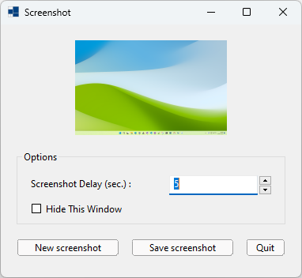
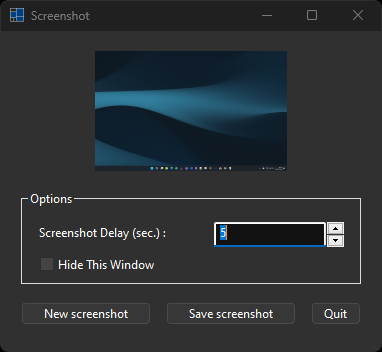
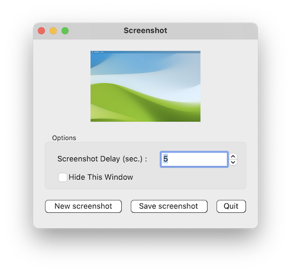
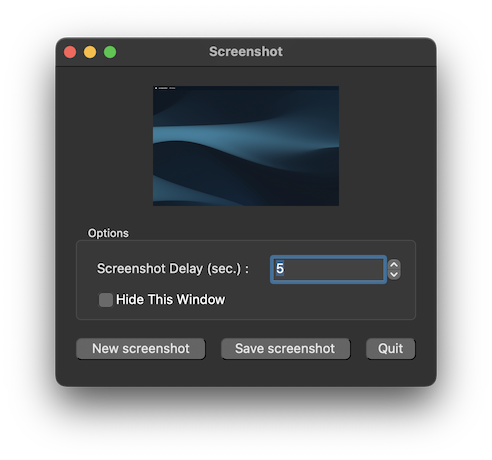
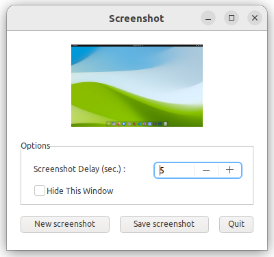
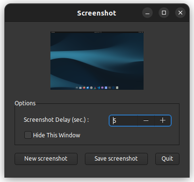

|
xtd
0.2.0
|
Loading...
Searching...
No Matches
screenshot.cpp
shows how to fill ellipse in paint event using xtd::drawing::graphics::copy_from_screen.
- Windows
- 

- macOS
- 

- Gnome
- 

#include <xtd/xtd>
namespace screenshot_example {
class form1 : public form {
public:
form1() {
text("Screenshot");
client_size({380, 320});
screenshot_picture_box.size_mode(picture_box_size_mode::zoom);
screenshot_picture_box.anchor(anchor_styles::left|anchor_styles::top|anchor_styles::right|anchor_styles::bottom);
options_group_box.anchor(anchor_styles::left|anchor_styles::bottom|anchor_styles::right);
screenshot_delay_label.auto_size(true);
screenshot_delay_numeric_up_down.anchor(anchor_styles::left|anchor_styles::top|anchor_styles::right);
hide_this_window_check_box.auto_size(true);
screenshot_button.anchor(anchor_styles::left|anchor_styles::bottom);
screenshot_button.click += {*this, &form1::on_screenshot_button_click};
save_screenshot_button.anchor(anchor_styles::left|anchor_styles::bottom);
save_screenshot_button.click += {*this, &form1::on_save_screenshot_button_click};
quit_button.anchor(anchor_styles::left|anchor_styles::bottom);
quit_button.click += {*this, &form1::close};
take_screen_shot_timer.tick += {*this, &form1::on_take_screen_shot_timer_tick};
take_new_screenshot();
}
private:
auto on_save_screenshot_button_click() -> void {
if (!screenshot_picture_box.image().has_value()) return;
auto dialog = save_file_dialog {};
dialog.filter("PNG image(*.png)|*.png");
dialog.initial_directory(environment::get_folder_path(environment::special_folder::my_pictures));
dialog.file_name("untitled");
if (dialog.show_sheet_dialog(*this) == dialog_result::ok) screenshot_picture_box.image().value().save(dialog.file_name());
}
auto on_screenshot_button_click() -> void {
screenshot_button.enabled(false);
if (hide_this_window_check_box.checked()) hide();
take_screen_shot_timer.interval(time_span::from_seconds(screenshot_delay_numeric_up_down.value()));
take_screen_shot_timer.enabled(true);
}
auto on_take_screen_shot_timer_tick() -> void {
take_screen_shot_timer.enabled(false);
take_new_screenshot();
if (hide_this_window_check_box.checked()) show();
screenshot_button.enabled(true);
}
auto take_new_screenshot() -> void {
auto screenshot_bitmap = bitmap {screen::primary_screen().bounds().width, screen::primary_screen().bounds().height};
screenshot_bitmap.create_graphics().copy_from_screen({0, 0}, {0, 0}, screenshot_bitmap.size());
screenshot_picture_box.image(screenshot_bitmap);
}
picture_box screenshot_picture_box = picture_box::create(*this, point {20, 20}, {340, 120});
group_box options_group_box = group_box::create(*this, "Options", {20, 160}, {340, 94});
label screenshot_delay_label = label::create(options_group_box, "Screenshot Delay (sec.) :", {15, 18});
numeric_up_down screenshot_delay_numeric_up_down = numeric_up_down::create(options_group_box, 5, 0, 60, {190, 15}, {130, 25});
check_box hide_this_window_check_box = check_box::create(options_group_box, "Hide This Window", {15, 45});
button screenshot_button = button::create(*this, "New screenshot", {20, 270}, {130, 25});
button save_screenshot_button = button::create(*this, "Save screenshot", {165, 270}, {130, 25});
button quit_button = button::create(*this, "Quit", {310, 270}, {50, 25});
forms::timer take_screen_shot_timer;
};
}
auto main() -> int {
application::run(screenshot_example::form1 {});
}
Generated on Fri Dec 5 2025 12:44:34 for xtd by Gammasoft. All rights reserved.